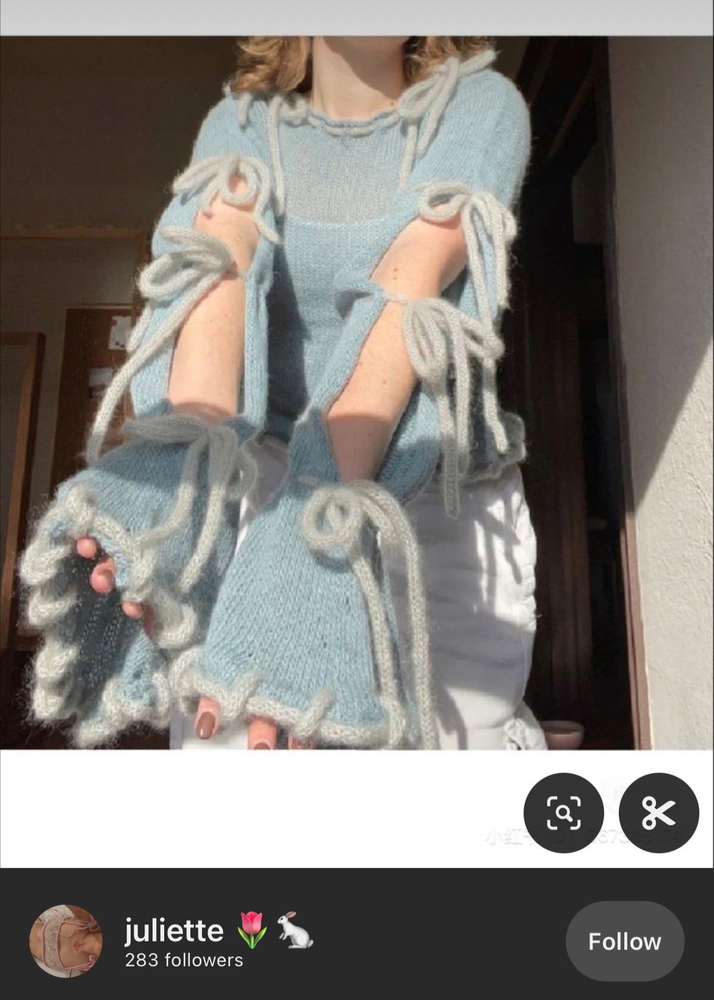
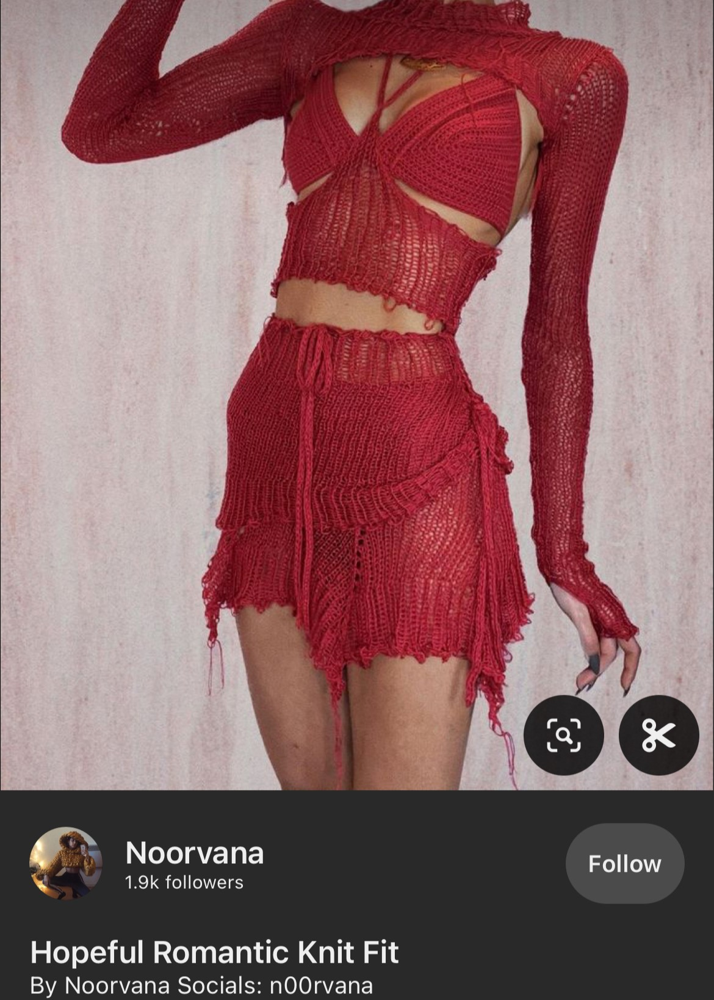
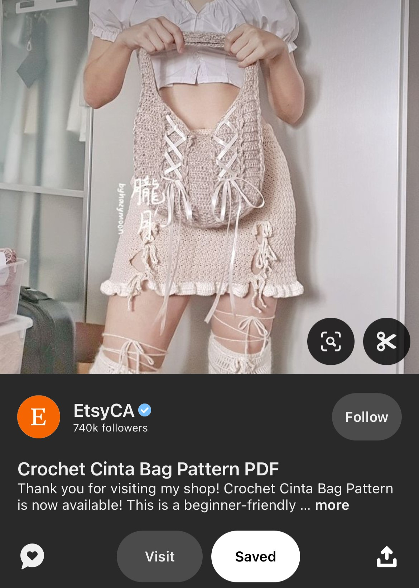

From a young age, Xandria was captivated by the world of fashion, finding deep fascination in the myriad ways individuals could express their unique identities through the artful combination of fabrics and styles. This early passion for the endless possibilities of self-expression through clothing has only grown stronger with time. Today, she avidly explores the ever-evolving landscape of fashion on social media, constantly seeking out distinctive and innovative expressions of style that challenge conventional boundaries and redefine what fashion means.
  Even within the realm of her hobbies, Xandria's flair for fashion shines through her crochet work, where she curates inspiration on Pinterest with an eye for style and creativity. Her admiration for crafting clothing through crochet speaks volumes of her desire to blend traditional techniques with contemporary fashion sensibilities. Eager to expand her creative repertoire, Xandria has harbored aspirations to delve into sewing, envisioning the endless possibilities of fabric and thread. However, the opportunity and dedication required to embark on this new journey have eluded her, often hindered by a tendency toward procrastination, which whimsically steers her path in other directions.


Xandria cherishes three particular TV shows from her childhood, which, in her eyes, epitomized the perfect blend of cartoons that resonated with both adults and children alike. The sophisticated humor woven into these shows catered to audiences of all ages, striking a delicate balance that appealed to her youthful imagination while also engaging more mature viewers. As she matured, it's evident that the unique brand of humor from these cherished shows played a significant role in shaping her own sense of humor, which she would describe as terrible.